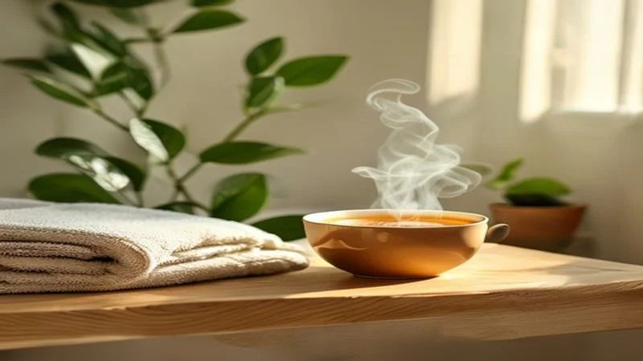

【東洋医学に学ぶ】冷えと自律神経の乱れを整える、今日からできる3つの温活養生法
2026.06.16

季節の変わり目や忙しい毎日の中で、「手足が冷えて眠れない」「しっかり休んだはずなのに疲れが取れない」「なんとなく気分が晴れない」といった不調を感じていませんか？
これらは、単なる寒さのせいだけではなく、体温調節を担う「自律神経」の乱れと、体全体の「冷え」が深く関係しているシグナルかもしれません。
東洋医学では、こうした「病気とまでは言えないけれど、確実に不調を感じる状態」を「未病（みびょう）」と呼び、日々の暮らしの中でケアしていくことをとても大切にしています。この記事では、冷えと自律神経の仕組みを優しくひも解きながら、今日からすぐに始められる具体的なセルフケア方法をお届けします。あなたの心と体に、フクフクとした温かい変化が訪れますように。

なぜ「冷え」は自律神経を乱してしまうのか？
私たちの体は、周囲の環境変化に合わせて常に一定の状態を保とうとしています。この働きをコントロールしているのが「自律神経」です。自律神経には、日中の活動時に優位になる「交感神経」と、夜間やリラックス時に優位になる「副交感神経」の2つがあり、これらが天秤のようにバランスを取っています。
しかし、体が冷えると血管が収縮し、血流が滞ります。すると体は「危機的な寒さだ」と判断し、緊張状態を作り出す交感神経を過剰に優位にしてしまいます。この緊張が続くと、以下のような悪循環に陥ります。
- 血管の持続的な収縮：さらに血の巡りが悪くなり、手足の冷えが悪化。
- 胃腸の働きの低下：リラックス時に活発になる消化吸収の働きが鈍り、内臓から冷える。
- 睡眠の質の低下：深部体温がスムーズに下がらず、寝付きが悪くなる。
東洋医学の視点では、体を巡るエネルギーである「気（き）」、栄養や血液を指す「血（けつ）」、水分を指す「水（すい）」のバランスが乱れている状態です。特に、温めるエネルギーである「気」が不足したり、巡りが滞ったりすると、血が全身に行き渡らずに冷えを感じやすくなります。つまり、自律神経を整えるためには、体を外側と内側の両方から「温める」ことが極めて重要なのです。
明日からすぐできる！自律神経を整える温活養生3選
お金をかけず、明日からご自宅で簡単に実践できるセルフケアを3つ厳選しました。どれも東洋医学的・生理学的に理にかなった効果的な方法です。
1. 「3つの首」を温め、万能のツボ「三陰交」を押す
体の中で太い血管が皮膚の近くを通っている「3つの首」（首・手首・足首）を温めることは、効率よく全身の血流を促す近道です。特に冷えを感じる夜は、レッグウォーマーやネックウォーマーを活用しましょう。
さらに、足の内側にある東洋医学の万能ツボ「三陰交（さんいんこう）」をやさしく刺激するのがおすすめです。
Tips: 「三陰交」の見つけ方と押し方
内くるぶしの最も高いところから、指幅4本分上の骨の後ろ側のキワにあります。親指の腹を使って、心地よいと感じる強さで、息を吐きながら3〜5秒かけてゆっくり押し、吸いながら離します。これを左右5回ずつ行いましょう。冷えや婦人科系の不調全般に効果的です。

2. 1分間で心身を緩める「4・7・8呼吸法」
冷えによって交感神経が優位になり、呼吸が浅くなっている人が多く見られます。呼吸は、私たちが唯一、自律神経を直接コントロールできる手段です。以下の呼吸法を、寝る前や緊張を感じたときに行ってみてください。
- まずは口から完全に息を吐ききります。
- 鼻から4秒かけて静かに息を吸います。
- 7秒間、息を止めます（無理のない範囲で）。
- 8秒かけて、口から細く長く、息を吐きだします。
この比率で呼吸を行うと、副交感神経が急激に優位になり、血管が拡張して手足の先までじわっと温かくなっていくのを感じられます。
3. 朝一杯の「白湯」で内臓を優しく起こす
朝起きてすぐの体は、一日の中で最も体温が下がっています。ここに冷たい水を流し込んでしまうと、内臓が冷えて自律神経が乱れる原因に。朝一番には、ゆっくりと時間をかけて沸かした温かい「白湯（さゆ）」を、すすりながら5〜10分かけて飲みましょう。
胃腸などの内臓（東洋医学でいう「脾・胃」）が温まることで全身の代謝スイッチが入り、自律神経のバランスがスムーズに整い始めます。
忙しい日々のなかに、「わたしに戻る」養生時間を
冷えや自律神経の乱れは、日々の小さな無理が積み重なって生じるもの。だからこそ、毎日少しずつでも自分を労わる「養生」の時間を作ることが大切です。まずは、朝の白湯や、寝る前のツボ押しなど、今日からできることから始めてみてくださいね。
けれど、「毎日忙しくて、なかなかセルフケアのための時間が取れない」「もっと手軽に、深いリラックスを感じたい」という日もあるのではないでしょうか。
そんなときは、毎日の「お風呂の時間」を特別な養生のひとときに変えてみませんか。セルフケアブランドfucuu（フクウ）がお届けする生薬入浴剤は、植物のちからをそのまま閉じ込めた100%天然・無添加の処方。お湯に溶け出す生薬の温浴効果が、芯から体を温め、冷え固まった心と体をやさしく解きほぐします。さらに、国産アロマの豊かな香りが、乱れがちな自律神経を穏やかに整え、深い安らぎへと導きます。
湯船に身を委ね、ただ香りを吸い込むだけで完了する、究極の時短セルフケア。忙しい毎日を送るあなたにこそ、植物のちからを借りて「わたしに戻る」時間を、心を込めてお届けします。今夜はいつもより少しだけ、自分をいたわる温かい夜を過ごせますように。
fucuuの生薬入浴剤・国産アロマは、BASEオンラインショップでご購入いただけます。
BASEで購入する